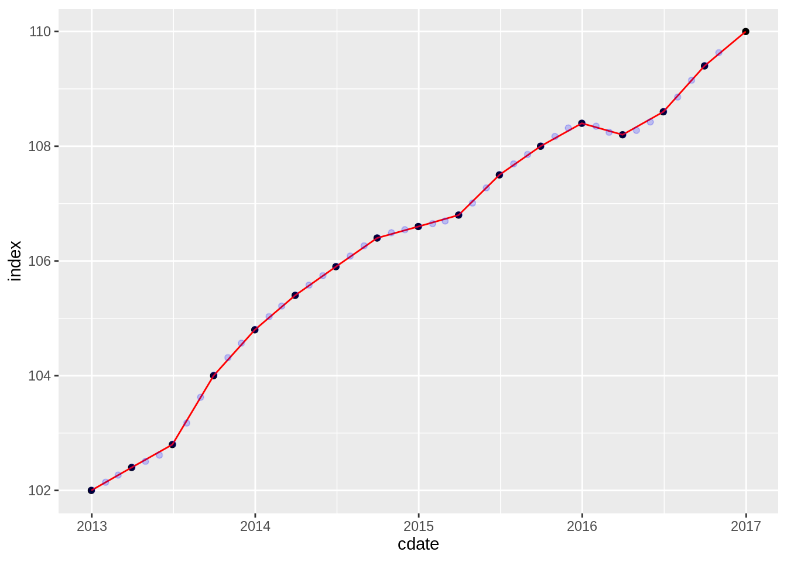
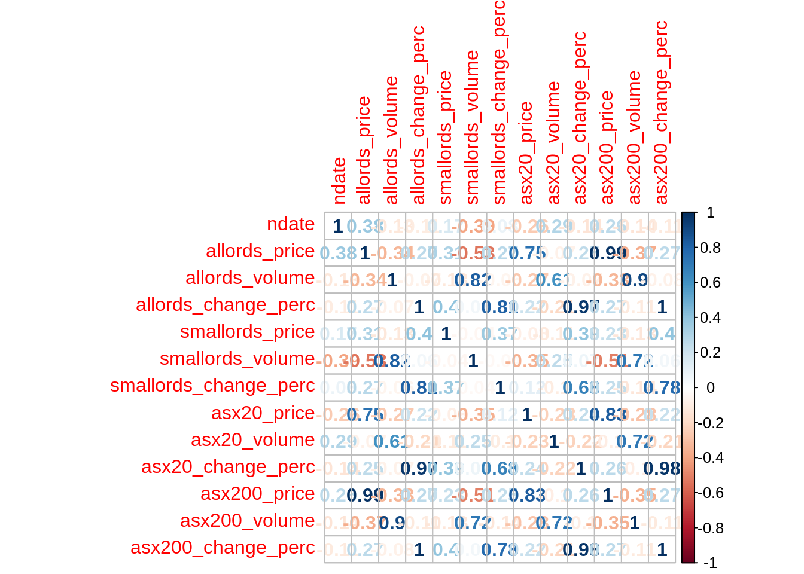
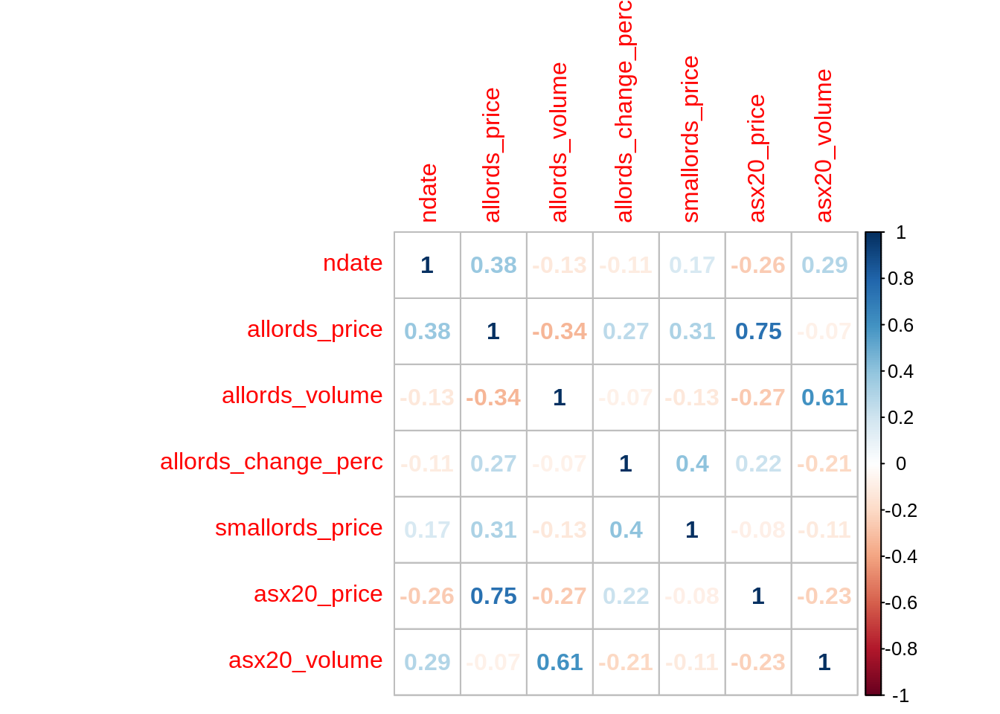
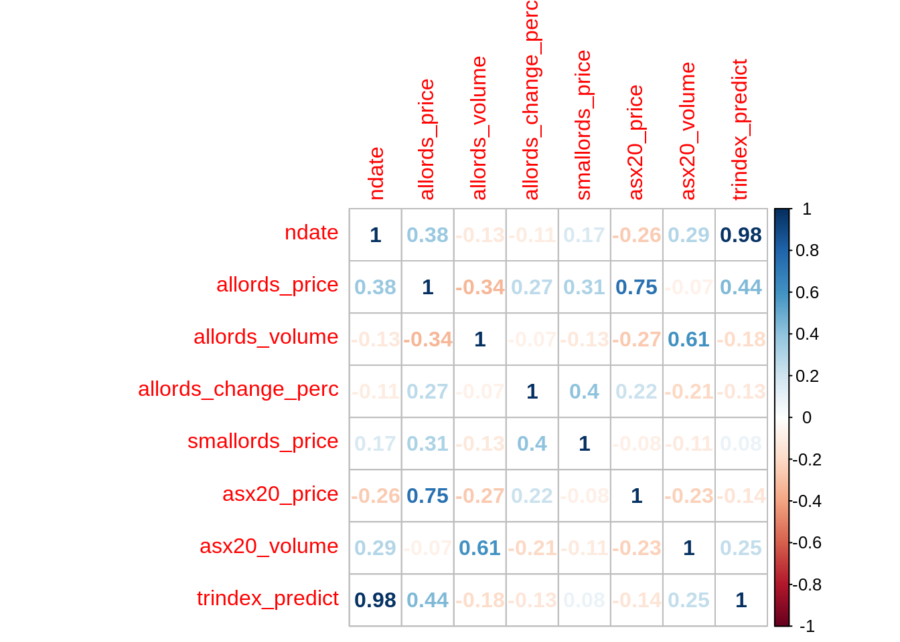

4 External Data
# as the data is of finanical transactions for a recent period, they may relate to other datasets that track finanical metrics, as financial metrics generally have a longer history, models can be more accuratley trained to predict them individually, increasing the accuracy of the final prediction
# the company is Australian so australian finanical metrics could be valid
# importing data from the relavant periods for potential financial metrics
# cpi data is recoreded quaterly by the reserve bank of australia
# https://www.rba.gov.au/inflation/measures-cpi.html
#consumer price index for australia
auscpi <- read_csv("./integrate_data/CPIdata.csv")## Parsed with column specification:
## cols(
## Cdate = col_date(format = ""),
## index = col_double()
## )names(auscpi) <- c("cdate","index")
# asx metrics were collected already summarised by date from
# https://au.investing.com/indices/all-ordinaries-historical-data
# asx index of top 500 companies
allords <- read_csv("./integrate_data/ASX All Ordinaries.csv")## Parsed with column specification:
## cols(
## Date = col_date(format = ""),
## Price = col_number(),
## Open = col_number(),
## High = col_number(),
## Low = col_number(),
## Vol. = col_character(),
## `Change %` = col_character()
## )# asx index of the 200 companies after the top 100 in asx all ordinaries
smallords <- read_csv("./integrate_data/ASX Small Ordinaries.csv")## Parsed with column specification:
## cols(
## Date = col_date(format = ""),
## Price = col_number(),
## Open = col_number(),
## High = col_number(),
## Low = col_number(),
## Vol. = col_character(),
## `Change %` = col_character()
## )## Parsed with column specification:
## cols(
## Date = col_date(format = ""),
## Price = col_number(),
## Open = col_number(),
## High = col_number(),
## Low = col_number(),
## Vol. = col_character(),
## `Change %` = col_character()
## )## Parsed with column specification:
## cols(
## Date = col_date(format = ""),
## Price = col_number(),
## Open = col_number(),
## High = col_number(),
## Low = col_number(),
## Vol. = col_character(),
## `Change %` = col_character()
## )#import transactions data to subset out the required date range
load(file ="./core_data/transactions_clean.Rdata")
trdates_out <- data.frame(unique(transactions$trdate))
names(trdates_out) <- "trdate" 4.1 Consumer Price index
#To match the CPIdata to the dataset the additional datapoints are interpolated, the created model follows the extacted data very closely to avoid creating confusion out of the actual data
summary(auscpi)## cdate index
## Min. :2012-12-31 Min. :102.0
## 1st Qu.:2013-12-31 1st Qu.:104.8
## Median :2014-12-31 Median :106.6
## Mean :2014-12-30 Mean :106.3
## 3rd Qu.:2015-12-31 3rd Qu.:108.2
## Max. :2016-12-31 Max. :110.0# check formatting
auscpi$cdate <- as.Date(auscpi$cdate)
# convert date to numeric value for loess modelling
auscpi$ndate <- as.numeric(auscpi$cdate)
#transform dates from dataset similarly
trdates_out$trdate <- as.Date(trdates_out$trdate)
trdates_out$ndate <- as.numeric(trdates_out$trdate)
#create loess model for data, loess can create a smoothed curve through or near each point
cpi_lm <- loess(index ~ ndate, data = auscpi, span = 0.25, degree = 2)
# create a prediction dataframe of predicted points for the same cpi data
cpi_predict <- data.frame(index_predict = predict(cpi_lm, auscpi), cdate = auscpi$cdate)
#create a dataframe of predicted interpolated points to match the transaction dataset
cpi_tdates <- data.frame(trindex_predict = predict(cpi_lm, trdates_out), trdate = trdates_out$trdate)
#plot together to check if prediction outcome is as intended
cpi_predict_plot <- ggplot(auscpi , aes( x = cdate, y = index)) +
geom_point() +
geom_line(color ="red", data = cpi_predict, aes(y = index_predict)) +
geom_point(alpha = 0.2, color = "blue", data = cpi_tdates, aes(x = trdate, y = trindex_predict))
cpi_predict_plot 
4.2 ASX Data
all_asx <- c("allords", "smallords", "asx20", "asx200")
combined_asx <- trdates_out
names(combined_asx) <- c("date", "ndate")
for (index in all_asx) {
output <- eval(parse(text = index)) %>%
select("Date", "Price", "Vol.", "Change %")
rename <- c("date", paste(index, "price", sep = "_"), paste(index, "volume", sep = "_"), paste(index, "change_perc", sep = "_"))
names(output) <- rename
combined_asx <- merge(combined_asx, output, by = "date", all.x = TRUE)
assign(index, output)
}
str(combined_asx)## 'data.frame': 47 obs. of 14 variables:
## $ date : Date, format: "2013-01-01" "2013-02-01" ...
## $ ndate : num 15706 15737 15765 15796 15826 ...
## $ allords_price : num 4901 5120 4980 5169 4914 ...
## $ allords_volume : chr "15.86B" "17.90B" "18.55B" "18.02B" ...
## $ allords_change_perc : chr "5.07%" "4.48%" "-2.74%" "3.79%" ...
## $ smallords_price : num 2376 2390 2295 2186 2101 ...
## $ smallords_volume : chr "6.44B" "6.95B" "7.88B" "8.50B" ...
## $ smallords_change_perc: chr "4.17%" "0.58%" "-3.96%" "-4.74%" ...
## $ asx20_price : num 3009 3162 3073 3264 3059 ...
## $ asx20_volume : chr "2.15B" "2.89B" "2.64B" "2.40B" ...
## $ asx20_change_perc : chr "4.96%" "5.10%" "-2.83%" "6.23%" ...
## $ asx200_price : num 4879 5104 4966 5191 4927 ...
## $ asx200_volume : chr "13.14B" "15.11B" "15.31B" "14.58B" ...
## $ asx200_change_perc : chr "4.94%" "4.62%" "-2.70%" "4.52%" ...combined_asx2 <- combined_asx
combined_asx2[] <- lapply(combined_asx2, function(x) gsub("%", "e-2", x))
combined_asx2[] <- lapply(combined_asx2, function(x) gsub("B", "e9", x))
combined_asx2[] <- lapply(combined_asx2, function(x) as.numeric(x))## Warning in FUN(X[[i]], ...): NAs introduced by coercioncombined_asx2 <- combined_asx2[,-1]
cor_asx2 <- cor(combined_asx2)
corrplot(cor_asx2, method = "number")
combined_asx2 <- combined_asx2 %>%
select(-asx200_change_perc, -asx200_volume, -asx200_price, -asx20_change_perc, -smallords_change_perc, -smallords_volume)
cor_asx2 <- cor(combined_asx2)
corrplot(cor_asx2, method = "number")
4.3 Comined external data
#correlation
combined_external <- merge(combined_asx, cpi_tdates, by = "trdate")
cor_ext <- cor(combined_external[-1])
corrplot(cor_ext, method = "number")
4.4 Unused aditional ideas
# School Holidays
a_i1_l1$shols <- "0"
a_i1_l1[a_i1_l1$trmonth == "Apr" , "shols"] <- 2.5
a_i1_l1[a_i1_l1$trmonth == "Jul" , "shols"] <- 2
a_i1_l1[a_i1_l1$trmonth == "Sep" , "shols"] <- 1
a_i1_l1[a_i1_l1$trmonth == "Oct" , "shols"] <- 1
a_i1_l1[a_i1_l1$trmonth == "Dec" , "shols"] <- 2.5
a_i1_l1[a_i1_l1$trmonth == "Jan" , "shols"] <- 4
a_i1_l1$shols <- as.numeric(a_i1_l1$shols)
summary(a_i1_l1$shols)
# inflation
# https://www.statista.com/statistics/271845/inflation-rate-in-australia/
inflation <- tibble(year = c(2013, 2014, 2015, 2016), inflperc = c(2.45, 2.51, 1.51, 1.25))
# gdp growth
# https://data.worldbank.org/indicator/NY.GDP.MKTP.KD.ZG?end=2016&locations=AU&start=2013
gdpgrowth <- tibble(year = c(2013, 2014, 2015, 2016), growthperc = c(2.585,2.533,2.193,2.771))
gdpgrowth <- gdpgrowth %>%
slice(rep(1:n(), each = 12))
gdpgrowth$growthperc <- gdpgrowth$growthperc/12/100
gdpgrowth <- gdpgrowth[-48,]
gdpgrowth$growthperccumul <- gdpgrowth$growthperc
gdpgrowth <- data.frame(gdpgrowth)
for (inter in 2:nrow(gdpgrowth)) {
gdpgrowth[inter,3] <- gdpgrowth[[inter,2]] + gdpgrowth[[inter-1,3]]
}
# Seasons
a_i1_l1$seasons <- "spring"
a_i1_l1[a_i1_l1$trmonth == "Dec" | a_i1_l1$trmonth == "Jan" | a_i1_l1$trmonth == "Feb" , "seasons"] <- "summer"
a_i1_l1[a_i1_l1$trmonth == "Mar" | a_i1_l1$trmonth == "Apr" | a_i1_l1$trmonth == "May" , "seasons"] <- "autumn"
a_i1_l1[a_i1_l1$trmonth == "Jun" | a_i1_l1$trmonth == "Jul" | a_i1_l1$trmonth == "Aug" , "seasons"] <- "winter"
a_i1_l1$seasons <- as.ordered(a_i1_l1$seasons)
# aus fiscal quarters
a_i1_l1$fisquarters <- "fQ4"
a_i1_l1[a_i1_l1$trmonth == "Jul" | a_i1_l1$trmonth == "Aug" | a_i1_l1$trmonth == "Sep" , "fisquarters"] <- "fQ1"
a_i1_l1[a_i1_l1$trmonth == "Oct" | a_i1_l1$trmonth == "Nov" | a_i1_l1$trmonth == "Dec" , "fisquarters"] <- "fQ2"
a_i1_l1[a_i1_l1$trmonth == "Jan" | a_i1_l1$trmonth == "Feb" | a_i1_l1$trmonth == "Mar" , "fisquarters"] <- "fQ3"
a_i1_l1$fisquarters <- as.ordered(a_i1_l1$fisquarters)
# calendar quarters
a_i1_l1$calquarters <- "cQ4"
a_i1_l1[a_i1_l1$trmonth == "Jan" | a_i1_l1$trmonth == "Feb" | a_i1_l1$trmonth == "Mar" , "calquarters"] <- "cQ1"
a_i1_l1[a_i1_l1$trmonth == "Apr" | a_i1_l1$trmonth == "May" | a_i1_l1$trmonth == "Jun" , "calquarters"] <- "cQ2"
a_i1_l1[a_i1_l1$trmonth == "Jul" | a_i1_l1$trmonth == "Aug" | a_i1_l1$trmonth == "Sep" , "calquarters"] <- "cQ3"
a_i1_l1$calquarters <- as.ordered(a_i1_l1$calquarters)